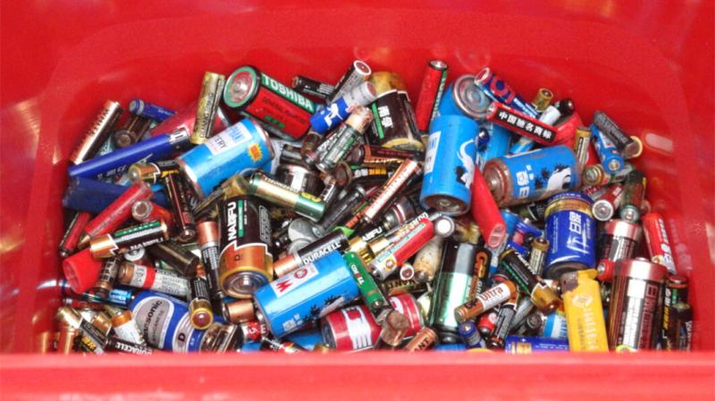

Harm

harm
Disposable plastic products, known as “white pollution”, are buried in the soil and begin to degrade after more than 200 years. It deteriorates the soil and affects the growth of crops. The residual amount of plastics reaches 3 kg per mu, and the crops will be reduced by 20~. 30%.
There are also common used batteries, including heavy metals such as mercury, lead, cadmium, nickel, and electrolytic solutions such as acid and alkali, which have different degrees of harm to human and biological environments. According to relevant information, a battery of No. 1 is rotten in the ground, which can permanently lose the value of 1 square meter of soil; a button cell can pollute 600 tons of water, which is equivalent to the amount of water a person has in his lifetime.
If the waste battery is mixed into domestic waste and landfilled, or discarded, the oozing mercury and heavy metal substances will penetrate into the soil, pollute the groundwater, and then enter the fish and crops to destroy the living environment of human beings, indirectly threatening human health. .
According to relevant experts, mercury is a highly toxic heavy metal that has a great destructive effect on the central nervous system. At present, the mercury content of mercury-containing alkaline dry batteries produced in China is 1% to 5%, and the mercury content of neutral dry batteries is 0.025%. The mercury consumption in China's battery production is as many as several tens of tons per year, and cadmium is extremely easy in the human body. Caused by chronic poisoning, the main symptoms are emphysema, bone softening, anemia, it is likely to cause paralysis, it interferes with kidney function and reproductive function.